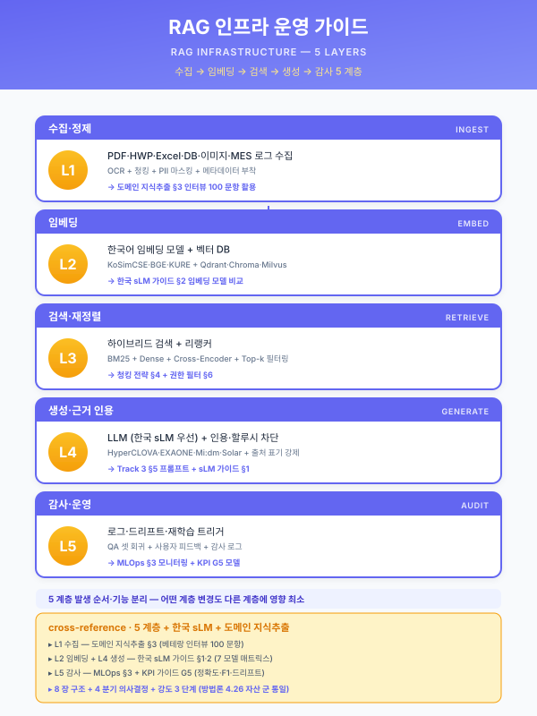
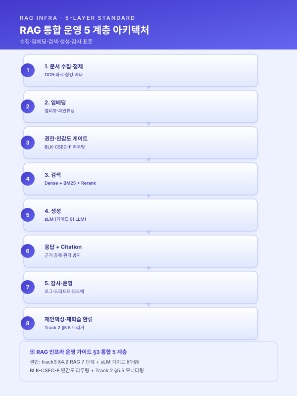

가이드 — RAG 인프라 운영 (Vector DB·임베딩·검색·생성·감사)¤
📖 약 24 분 읽기

ℹ️ 페이지 정보 (워크스페이스 메타)
(강관 RAG 중심) 자체평가 갭 24 해소. RAG 인프라 5 계층 (수집·임베딩·검색·생성·감사) 의 통합 운영 표준 자산. 운영 가이드 군의 7 번째 멤버 (other/synergy-roi.md · guide/duration-compress.md · 재무_예산_산정_가이드.md · guide/korean-slm.md · guide/kpi-measurement.md · guide/external-validation.md 에 이은 자산). 4.26 자산 군 포맷 통일 — 8 장 구조 (계층 매트릭스 → 의사결정 분기 → 통합 아키텍처 → 운영 절차 → 인용 양식 → 결합 → 확인 필요 → 한계) 적용.
플레이스홀더 범례 —
[수치]수치,[%]비율,[기간]기간,[임계]임계값,[벡터스토어]벡터스토어 (Pinecone·Weaviate·Milvus·OpenSearch),[임베딩모델]임베딩 모델 (OpenAI·Cohere·BGE·KoSimCSE·Solar 등),[LLM]생성 LLM (guide/korean-slm.md§1 매트릭스 7 행 참조). (확인 필요) 항목은 §7 에 목록화 — 벡터 DB 라이센스·임베딩 벤치마크·청킹 표준·재인덱싱 주기·GPU 단가·RAGAS 임계는 시점·도구·산업 변동 영역.본 가이드의 직접 근거 —
track/track3-index.md§4.2 RAG 기준 아키텍처 (수집→정제→청킹→임베딩→검색→생성→감사) · §4.3 LLM 모델 선택 전략 · §4.4 벡터스토어·검색 인프라 선정 기준 · §5.1~§5.5 청킹·임베딩·검색·생성 세부,track/track1-engine-cards.md§5.2-f LLM·RAG 지식검색 엔진 + §5.2-g 형상 임베딩,module/saas-security.mdBLK-CSEC-F 민감도 라우팅,guide/korean-slm.md§1·§2.1·§5 (생성 계층의 sLM 결합),guide/kpi-measurement.md§1.3 AI 모델 KPI (RAGAS·환각률·Citation),guide/external-validation.md(감사·외부 검증 양식).
1. RAG 인프라 5 계층 비교 매트릭스¤
본 가이드는 RAG 인프라를 발생 순서·기능 분리에 따라 5 계층으로 구분한다. 5 계층은 mutually exclusive 하게 설계되어 사업계획서 §4.3·§4.4·§5.x 본문에서 계층별 단독 인용 가능하며, 동시에 collectively exhaustive 하게 RAG 파이프라인의 데이터 흐름·모델·운영 차원을 모두 포괄한다. 5 계층 매트릭스는 7 열 (계층·핵심 기능·주요 도구·라이센스·도메인 적합·운영 부담·정합 자산) 로 사업계획서 직접 인용 가능한 형태로 제시한다. track/track3-index.md §4.2 의 7 단계 (수집·정제·청킹·임베딩·검색·생성·감사) 는 본 가이드에서 청킹과 임베딩을 하나의 계층 (2. 임베딩) 으로, 수집과 정제를 하나의 계층 (1. 수집·정제) 으로 통합하여 5 계층으로 정렬되며, 이는 사업계획서 §4.x 의 도식 분량을 줄이고 운영 책임자 매핑을 단순화하기 위함이다.
| 계층 | 핵심 기능 | 주요 도구 (확인 필요) | 라이센스 (확인 필요) | 도메인 적합 | 운영 부담 | 정합 자산 |
|---|---|---|---|---|---|---|
| 1. 문서 수집·정제 | OCR · HWP/DOCX/PDF/DWG 파서 · 청킹 · 메타 추출 | Apache Tika · Unstructured · LlamaParse · 한컴오피스 SDK · OpenCV OCR · pypdf | OSS·상용 혼재 | 비정형 비중 高 (HWP·스캔 PDF·도면) | 中 (포맷별 파서 유지) | track3 §5.1·§5.2 |
| 2. 임베딩 | 다국어·도메인 임베딩 모델 · 멀티뷰 임베딩 · 파인튜닝 (LoRA·QLoRA) | OpenAI text-embedding-3 · Cohere embed-multilingual · BGE-M3 · KoSimCSE · Solar Embedding · KURE | API·OSS 혼재 | 한국어 도메인 어휘 격차 보정 영역 | 中 (재학습·재인덱싱) | track3 §5.3 + sLM 가이드 §1·§3 |
| 3. 검색 | Dense + BM25 하이브리드 · 메타 필터 · Re-ranker · Top-K 정제 | Pinecone · Weaviate · Milvus · OpenSearch · Qdrant + Cohere Rerank · BGE Reranker | 매니지드 vs 온프레 분기 | 데이터 규모·온프레 요구·QPS 별 분기 | 高 (인프라 운영) | track3 §4.4·§5.4 + 5.2-f |
| 4. 생성 | LLM 프롬프팅 · Citation 강제 · 환각 방지 · 거부 정책 · 응답 신뢰도 | EXAONE · HyperCLOVA X · Mi:dm · 포스코 sLM · Solar · GPT · Claude · Gemini | sLM 가이드 §1 매트릭스 직접 결합 | 민감도 분기 (BLK-CSEC-F) | 中 (sLM 가이드 §2.4 비용 분기) | track3 §4.3·§5.5 + sLM 가이드 §1·§5 |
| 5. 감사·운영 | 질의·응답 로그 · Citation 추적 · 드리프트 · 피드백 · 권한 감사 | Track 2 MLOps 7 종 (MLflow·Evidently·Prometheus 등) + 감사 시스템 + RAGAS | OSS·상용 혼재 | 운영 거버넌스·외부 검증 영역 | 高 (감사·로그 보관) | Track 2 §5.5·§6.5 + KPI 가이드 §1.4 + 외부검증 가이드 |
5 계층 MECE 자기평가 — 1 (수집·정제) 은 입력, 2 (임베딩) 는 표현, 3 (검색) 은 인덱스·질의, 4 (생성) 는 출력, 5 (감사·운영) 는 횡단 거버넌스로 차원이 분리. 각 계층은 단독 인용 가능하며, 5 계층을 직렬 결합하면 단일 RAG 파이프라인이 완성. 채움도 — 핵심 기능·도메인 적합·정합 자산 3 열은 자산 간 일관성 (track3·5.2-f·BLK-CSEC-F·sLM 가이드) 으로 확정 가능, 도구·라이센스·운영 부담 3 열은 시점·도구 변동 영역이므로 (확인 필요) 로 통일.
[출처:
track/track3-index.md§4.2 RAG 기준 아키텍처 7 단계 (수집→정제→청킹→임베딩→검색→생성→감사) 를 본 가이드는 5 계층 (수집·정제 1 통합 + 청킹·임베딩 1 통합 + 검색 + 생성 + 감사) 으로 재구성;track/track1-engine-cards.md§5.2-f 의 RAG 파이프라인 도식과 직접 정합;guide/korean-slm.md§1 매트릭스 7 행이 본 가이드 4 계층 (생성) 의 직접 결합 입력]
2. 활용 의사결정 4 분기¤
본 가이드의 핵심 의사결정 도구는 RAG 인프라 선정을 4 차원으로 직교 분기시키는 결정 매트릭스이다. 4 분기는 mutually exclusive 하게 설계되어 사업계획서 §4.3·§4.4 본문에서 1 분기씩 단독 인용 가능하며, 동시에 4 분기를 모두 거치면 단일 RAG 인프라 라인업이 결정된다.
2.1 벡터 DB 분기 (인프라 차원)¤
track/track3-index.md §4.4 벡터스토어·검색 인프라 선정 기준의 직접 확장 분기. 데이터 규모·온프레 요구·운영 인력의 3 축 결합으로 분기.
- 매니지드 (Pinecone·Weaviate Cloud·Qdrant Cloud) — 운영 부담 낮음·확장 자동·SLA 보장·외부 데이터 전송. 외부 API 허용 + 운영 인력 부족 + 일반 사업 (스마트공장 PoC·디지털 경남 12 개월) 에 적합. 데이터 민감도 ②등급 이하 한정.
- 온프레 (Weaviate Self-host·Milvus·Qdrant Self-host) — 데이터 주권 확보·운영 부담 高·전담 SRE 필요·확장 수동. 민감도 ④·⑤ + 대중소상생 트랙 + R&D 사업 (전사적 DX) 에 적합. BLK-CSEC-F 의 온프레 강제 영역과 정합.
- 하이브리드형 (OpenSearch·Elasticsearch + 벡터) — BM25 + Dense 일체형·기존 검색 인프라 재활용·운영 친숙도 高. 기존 ELK·OpenSearch 인프라 보유 + 18 개월 풀 사업 (패키지 2·중견 냉연) 에 적합. 사업계획서 §3.5 AS-IS 인프라 활용 명분.
2.2 임베딩 모델 분기 (모델 차원)¤
도메인 어휘 격차·한국어 처리·파인튜닝 자유도의 3 축 결합으로 분기. guide/korean-slm.md §1 매트릭스의 임베딩 분기로 확장.
- 외산 다국어 API (OpenAI text-embedding-3·Cohere embed-multilingual) — 범용 우수·한국어 일반 양호·외부 전송 위험·도메인 어휘 약함. 민감도 ①·② + 일반 사업.
- 공개 다국어·한국어 (BGE-M3·KoSimCSE·KURE·Solar Embedding) — 자체 호스팅·OSS·한국어 양호·도메인 파인튜닝 자유 (LoRA·QLoRA). 민감도 ③ 이상 + R&D 사업.
- 도메인 파인튜닝 (LoRA·QLoRA 적용 사내 모델) — 도메인 어휘 격차 보정·사내 베테랑 QA 셋 학습·R&D 산출 IP 보유. 자동차 부품·고무·철강 등 도메인 어휘 高 + sLM 가이드 §3 파인튜닝 절차 적용 영역.
2.3 검색 전략 분기 (질의 차원)¤
질의 유형 (사실 검색 vs 의미 유사) ·데이터 규모·정확도 요구의 3 축 결합으로 분기.
- Dense 단독 — 의미 유사 검색 우수·키워드 정확도 약함·구현 단순. 비정형 SOP·매뉴얼 의미 검색에 적합.
- BM25 단독 — 키워드 정확도 우수·의미 유사 약함·인덱스 작음·해석 가능. 정형화 된 부품 코드·도면 ID 검색.
- 하이브리드 (Dense + BM25 + 메타 필터) + Re-ranker — 양 축 결합·정확도 최상·복잡도 高·Re-rank 비용. track3 §5.4 표준 + 5.2-f LLM·RAG 엔진의 1 차 권장 영역. 본 가이드는 12 개월 표준 사업 이상에 본 분기 권장.
2.4 생성 모델 분기 (LLM 차원)¤
guide/korean-slm.md §2.1 데이터 민감도 분기 + §2.4 비용·운영 분기와 직접 정합. 본 §2.4 는 sLM 가이드의 직접 결합 분기이며 본 가이드 단독 결정이 아닌 sLM 가이드 §1·§2 와의 결합 인용 필수 영역이다.
- 외부 API (GPT·Claude·Gemini) — 비용 우위·범용 우수·외부 전송 위험. 민감도 ①·② + 일반 사업 PoC.
- 한국 API 게이트웨이 (HyperCLOVA·EXAONE API·Mi:dm) — CSAP 정합·국내 데이터센터·도메인 어휘 양호. 민감도 ②·③ + CSAP 요구 사업.
- 온프레 sLM (EXAONE 온프레·Solar 자체·LG·삼성·포스코 그룹 sLM) — 영업비밀 보호·도메인 파인튜닝·운영 부담 高. 민감도 ④·⑤ + 대중소상생 트랙 강제. BLK-CSEC-F 의 온프레 강제 영역과 정합.
4 분기 직교성 자기평가 — 2.1 (인프라) 은 벡터 DB, 2.2 (모델) 는 임베딩, 2.3 (질의) 은 검색 전략, 2.4 (생성) 는 LLM 차원으로 차원이 분리되어 mutually exclusive. 각 분기는 단독 인용 가능하며, 4 분기를 직렬로 거치면 단일 RAG 인프라 라인업 (벡터 DB + 임베딩 + 검색기 + LLM) 이 결정.
2.5 4 분기 결합 의사결정 매트릭스 적용 사례¤
본 가이드의 4 분기를 결합한 단일 라인업 결정 사례 3 종을 제시한다. 각 사례는 사업 성격·민감도·도메인의 입력 → 4 분기 결정의 흐름을 명시한다.
- 사례 A (대중소상생 LG AI 트랙 + 자동차 부품 고무 양산) — 입력: 민감도 ④ (OEM 사양·금형 코드) + 도메인 어휘 高 (밴버리·믹서·언더큐어). 4 분기 출력: 2.1 온프레 (Weaviate Self-host) + 2.2 도메인 파인튜닝 (BGE-M3 + LoRA) + 2.3 하이브리드 + Re-ranker + 2.4 온프레 sLM (EXAONE 온프레). 패키지 4 의 §4.x 직접 양식.
- 사례 B (스마트공장 12 개월 + 정밀가공 일반) — 입력: 민감도 ② (공개 SOP·작업표준서) + 도메인 어휘 中. 4 분기 출력: 2.1 매니지드 (Pinecone) + 2.2 외산 다국어 (OpenAI) + 2.3 Dense + BM25 + 2.4 외부 API + 한국 API 게이트웨이 하이브리드. 패키지 5 의 §4.x 직접 양식.
- 사례 C (전사적 DX R&D 18 개월 + 다 도메인) — 입력: 민감도 ⑤ (영업비밀·도면 IP) + R&D IP 보유 요구. 4 분기 출력: 2.1 온프레 (Milvus) + 2.2 도메인 파인튜닝 (KoSimCSE + LoRA) + 2.3 하이브리드 + Re-ranker + 2.4 오픈소스 sLM 자체 호스팅 (Solar·Llama 한국어 파생). 패키지 3 의 §4.x 직접 양식.
3. 통합 운영 5 계층 아키텍처¤
본 가이드 §1 의 5 계층을 단일 데이터 흐름 다이어그램으로 통합한 표준 아키텍처. 사업계획서 §4.2 RAG 기준 아키텍처 (track3 §4.2 의 7 단계) 의 본 가이드 표준화 형태이며, 강도 2 이상 인용 시 본 도식을 사업계획서에 직접 삽입한다.

3.1 계층 간 데이터 흐름¤
- 1→2 — 청크 단위로 메타 (출처 문서 ID·페이지·작성일·권한 등급 BLK-CSEC-B ①~⑤·작성자·도메인 태그) 첨부 후 임베딩 입력. 메타 누락 시 §5 감사·권한 분기가 작동 불가하므로 메타 표준화는 1→2 흐름의 필수 조건.
- 2→3 — 벡터 + 메타가 벡터스토어에 적재. 멀티뷰 임베딩 (원문·요약·키워드 3 뷰) 적용 시 동일 청크당 3 벡터가 적재되어 인덱스 부담 3 배 — 본 가이드는 사업 분량 (
guide/duration-compress.md§3) 의 12 개월 표준 사업 이상에 멀티뷰 임베딩 권장. - 3→4 — 사용자 질의가 권한·민감도 게이트 통과 후 검색 수행, 검색 결과 Top-N (N = [수치]·일반 5~10) + Re-rank 후 LLM 컨텍스트로 전달. 게이트 결정은 BLK-CSEC-F 의 온프레 강제 분기와 정합.
- 4→5 — 생성된 응답 · Citation · 응답 신뢰도 점수 · 처리 시간 · 권한 분기 결과가 감사 로그에 기록. KPI 가이드 §1.3 AI 모델 KPI + §1.4 거버넌스 KPI 의 직접 입력.
3.2 운영 거버넌스¤
본 아키텍처의 운영 거버넌스는 5 계층 횡단 사항 (오너십·정책·재인덱싱·권한·로그) 을 다룬다. 본 §3.2 는 사업계획서 §4.2 RAG 기준 아키텍처 + §6.5 운영위원회 회의체 안건의 직접 입력이다.
- 문서 오너십·권한·변경 관리 — 수집 대상 문서의 오너 부서 명시, 갱신 주기 (실시간·일·주·월) 매핑, 폐기·이동 시 재인덱싱 트리거 자동화. 권한 등급 (BLK-CSEC-B ①~⑤) 을 메타에 첨부하여 §3 의 권한·민감도 게이트가 검색 시 자동 필터링 가능하도록 표준화.
- 청킹·임베딩 정책 갱신 주기 — 청킹 전략 (계층·섹션·토픽) 변경 시 전체 재인덱싱 필요, 임베딩 모델 변경 시 마찬가지. 본 가이드는 분기 1 회 정책 점검 + 연 1 회 모델·전략 갱신을 표준 권고. 정책 갱신 의사결정은 운영위원회 분기 회의체 안건 (Track 2 §6.5 정합).
- 벡터 DB 재인덱싱 주기 — 신규 문서 추가는 증분 인덱싱 (실시간·일), 임베딩 모델·청킹 정책 변경은 전체 재인덱싱 (분기·연). 재인덱싱 비용은 §4.3 Post 절차에 누적되어
재무_예산_산정_가이드.md§3 단위 비용 갱신의 분기 입력으로 연결. - 로그·감사 보관 주기 — 질의·응답·Citation·권한 분기 결과의 감사 로그는 BLK-CSEC-C 로그 보관 표준에 따라 [기간] 보관, 외부 감사·OEM SQA 감사·정부지원 정산 시 즉시 추출 가능 형태로 보관.
guide/external-validation.md의 감사 출력 입력으로 연결. - 재해·BCP 운영 — 벡터 DB 장애·LLM API 차단·임베딩 모델 손상의 3 시나리오에 대한 BCP 표준. 매니지드 벡터 DB 장애 시 온프레 대체 인덱스로 자동 페일오버, LLM API 차단 시 한국 sLM 게이트웨이로 폴백, 임베딩 모델 손상 시 직전 모델 버전으로 롤백.
module/saas-security.mdBCP 모듈과 결합 인용.
4. 운영 절차 (Pre·In·Post)¤
guide/kpi-measurement.md §4 의 Pre·In·Post 3 단계 검증 절차를 RAG 인프라 운영에 특화시킨 절차이다. KPI 가이드의 표준 절차 + 본 가이드의 RAG 특화 항목의 결합 인용으로 사업계획서 §6.3·§7.x 본문이 완성된다. 본 §4 는 본 가이드 §3 통합 아키텍처의 시간 차원 운영 절차로서 §3 가 "공간 (계층) " 차원이라면 §4 는 "시간 (사업 단계) " 차원의 분리 서술이다.
4.1 Pre (도입 전)¤
- 문서 인벤토리·민감도 분류 — 수집 대상 문서를 (문서종·건수·갱신 주기·민감도 등급 BLK-CSEC-B ①~⑤·오너 부서·포맷) 6 항목으로 인벤토리화. 민감도 ④·⑤ 문서는 §2.1 의 온프레 벡터 DB + §2.4 의 온프레 sLM 강제 분기에 즉시 매핑.
- 평가셋 구성 (도메인 골드셋) —
guide/korean-slm.md§4 평가셋 구성 표준 4 카테고리 (일반 한국어·도메인 지식·안전성·형식) 준용. 도메인 골드셋 [수치] 문항 (12 개월 사업 [수치] 문항·18 개월 풀 사업 [수치] 문항 권고). 신설 가이드가이드_도메인_지식추출(G17 작업) 의 베테랑 QA 추출 절차 가 본 단계의 직접 입력. - 인프라 선정 — §2 의 4 분기 의사결정 매트릭스 적용. 사업 성격 (대중소상생 vs CSAP vs R&D) + 민감도 + 도메인 + 비용의 4 축 결합으로 단일 라인업 결정.
4.2 In (운영 중)¤
- 검색 품질 모니터링 — Recall@K · MRR · NDCG 의 검색 품질 KPI + 응답 지연 P95 (
guide/kpi-measurement.md§1.3·§1.4 정합) 의 실시간·일 추적. 임계 [임계] 미달 시 재인덱싱 또는 청킹 정책 재검토 트리거. - 환각률·Citation 정확도 추적 — RAGAS Faithfulness · Answer Relevancy · Context Precision/Recall 의 4 축 분기 회귀 + 환각 사건 (Citation 누락·근거 외 응답) 의 일일 카운트. sLM 가이드 §4.2 의 평가 지표와 직접 정합.
- 사용자 피드백·문서 보강 루프 — SCN-MLO-03 단일 피드백 UI (Track 2 §6.4) 를 통해 작업자·검사원·QA 가 응답 적합도 환류. 부정 피드백 [수치] 건 누적 시 문서 보강·청킹 재검토·임베딩 파인튜닝 트리거.
4.3 Post (회기 종료)¤
- 임베딩 모델 재학습·벡터 DB 재인덱싱 — 분기 1 회 도메인 골드셋 회귀 + 신규 도메인 어휘 추출 → LoRA·QLoRA 추가 학습. 전체 재인덱싱 비용 (GPU 시간·작업 다운타임) 은
재무_예산_산정_가이드.md§3 단위 비용에 분기별 누적. 재학습·재인덱싱 트리거는 ① 도메인 골드셋 회귀 점수 [임계] 미달, ② 부정 피드백 누적 [수치] 건 초과, ③ 신규 도메인 어휘 비율 [%] 초과, ④ 정기 분기 스케줄의 4 축 결합 (Track 2 §6.2 5 축 트리거 정합). - 평가셋 갱신·새 도메인 지식 편입 —
가이드_도메인_지식추출(G17) 의 베테랑 인터뷰 사이클을 분기 1 회 운영, 신규 QA 셋 [수치] 건 추가, 폐기·갱신 문서의 평가셋 반영. 갱신된 평가셋은 다음 분기 §4.2 In 단계의 회귀 평가 입력으로 직접 순환. - 비용·운영 부담 분석 — 벡터 DB 인덱스 크기·QPS·LLM 토큰 사용량·GPU 시간의 분기 결산 →
재무_예산_산정_가이드.md§3 단위 비용 갱신 입력. 외부 검증 (OEM SQA·정부지원 정산·인증 갱신) 의 RAG 인프라 항목 출력은guide/external-validation.md양식에 맞춰 정리.
5. 사업계획서 인용 강도 양식 (3 단계)¤
본 가이드의 §1 5 계층 매트릭스 + §2 4 분기 + §3 통합 아키텍처 + §4 운영 절차를 사업계획서 §4.2·§4.3·§4.4·§5.x 본문에 직접 인용하는 표준 양식이다. guide/korean-slm.md §6·guide/kpi-measurement.md §5 의 3 단계 인용 강도 양식과 정합.
| 강도 | 분량 | 구성 | 적합 사업 | 본 가이드 동원 범위 |
|---|---|---|---|---|
| 강도 1 (1 표) | §4.4 표 1 개 | §1 5 계층 매트릭스 (시나리오 행 발췌) | 9 개월 압축 (패키지 5·SaaS 경량) | §1 |
| 강도 2 (1 표 + 1 단락) | 표 + §3 아키텍처 1 단락 | §1 + §3 도식 + §2 4 분기 1 분기 인용 | 12 개월 표준 (패키지 4·LG AI 트랙) | §1 + §2 + §3 |
| 강도 3 (1 표 + 2 단락 + 절차) | 표 + §3 도식 + §4 절차 + §2 4 분기 풀 인용 | §1·§2·§3·§4 풀 동원 | 18 개월 풀 (패키지 2·중견 냉연) · R&D (전사적 DX) | §1·§2·§3·§4 |
강도 2 표준 단락 양식 — "본 사업의 RAG 인프라는 본 워크스페이스 표준 (
guide/rag-infra.md§1) 의 5 계층 (수집·정제 → 임베딩 → 검색 → 생성 → 감사·운영) 을 채택하며, 인프라 선정은 §2 의 4 분기 의사결정 (벡터 DB · 임베딩 · 검색 전략 · 생성 모델) 을 거쳐 본 사업의 민감도 [등급] · 도메인 [도메인] · 사업 성격 [트랙] 에 정합하는 라인업 ([벡터스토어] + [임베딩모델] + 하이브리드 검색 + [LLM]) 을 결정한다. 생성 계층 LLM 분기는guide/korean-slm.md§1·§2.1 결합 인용."
5.1 패키지별 §4·§5 인용 사례 매핑¤
본 가이드의 §5 인용 강도는 워크스페이스 기존 패키지 사례와 다음과 같이 매핑된다. guide/assembly.md §6 신규 작성 섹션 의무에 따라 §4.x·§5.x RAG 본체 표는 매번 새로 작성하되, 본 가이드의 §1·§2·§3 분류·도구·아키텍처 표준이 재사용 자산으로 인용되는 구조이다.
- 패키지 5 (정밀가공 중소 SaaS 6 개월 압축) — 강도 1. §1 매트릭스에서 5 계층 시나리오 행 발췌 (LLM 표준작업 검색 단일 시나리오) + §2.1·§2.4 의 매니지드 + 외부 API 분기 1 줄 인용.
- 패키지 4 (고무 양산 12 개월 LG AI 트랙) — 강도 2. §1 매트릭스 + §3 통합 아키텍처 도식 + §2.4 생성 분기 (sLM 가이드 §1 EXAONE 결합) + §4.2 In 운영 1 단락. 본 가이드 §6 sLM·KPI·외부검증 결합 인용.
- 패키지 2 (중견 냉연 18 개월 풀 사업) — 강도 3. §1·§2 풀 인용 + §3 도식 + §4 Pre·In·Post 풀 절차 + §6 다 가이드 결합 + (확인 필요) 항목 §7 의 분기 1 회 갱신 양식.
- 패키지 3 (특수강관 R&D) — 강도 3 + 부록. 강도 3 + 본 가이드 §1·§2·§3·§4 풀 인용 + sLM 가이드 §3 도메인 파인튜닝 절차 결합 + 도메인 지식추출 가이드 (G17) 의 평가셋 절차 결합.
6. 다른 가이드·모듈 결합¤
본 가이드는 다음 자산과 직접 결합된다. 본 가이드는 운영 가이드 군의 7 번째 멤버로서 6 가이드의 RAG 인프라 입력·출력 표준을 통합 제공.
| 결합 자산 | 결합 지점 | 결합 효과 |
|---|---|---|
guide/korean-slm.md §1·§2·§5 |
본 가이드 §1 4 계층 (생성) · §2.4 생성 분기 · §3 아키텍처 LLM 노드 | 본 가이드 4 계층 = sLM 가이드의 직접 적용 영역. 결합 인용 필수. |
guide/kpi-measurement.md §1.3·§1.4·§4 |
본 가이드 §4 운영 절차 + §3 감사 계층 | KPI 가이드 §4 Pre·In·Post 가 본 가이드 §4 의 표준 절차 골격 |
guide/external-validation.md |
본 가이드 §5 감사·운영 + §4.3 Post 외부 검증 | 외부 검증 양식이 본 가이드 5 계층의 감사 출력 검증 |
재무_예산_산정_가이드.md §3·§4.1 |
본 가이드 §4.3 Post 비용 분석 + §1 도구 매트릭스 | 인프라 단위 비용 산정의 RAG 행 입력 |
other/synergy-roi.md 비정형 데이터 시너지 |
본 가이드 §3 아키텍처 + §1 매트릭스 5 계층 공유 | RAG 단일 인프라가 다 시나리오에 공유 시 시너지 모델 §1 직접 입력 |
guide/duration-compress.md §3 |
본 가이드 §5 인용 강도 3 단계 | 9·12·18 개월 분기와 §5 강도 1·2·3 정합 |
track/track3-index.md §4.2·§4.3·§4.4·§5.x |
본 가이드 전 장 | track3 의 RAG 기준 아키텍처 (§4.2) 가 본 가이드 §3 의 직접 근거 |
track/track1-engine-cards.md §5.2-f·§5.2-g |
본 가이드 §1·§2 + §3 아키텍처 | 5.2-f LLM·RAG 엔진의 인프라 표준화. 5.2-g 형상 임베딩이 §1 의 2 계층 (임베딩) 분기 추가. |
module/saas-security.md BLK-CSEC-F |
본 가이드 §2.1·§2.4 + §3 권한·민감도 게이트 | 민감도 라우팅의 본 가이드 §2·§3 직접 적용 |
가이드_도메인_지식추출 (G17 신설) |
본 가이드 §4.1 평가셋 + §4.3 평가셋 갱신 | 베테랑 QA 추출이 본 가이드 평가셋의 직접 입력 |
자산 결합도 자기평가 — 본 가이드의 8 장이 10 개 자산과 모두 명시적 결합 지점을 보유. 특히 sLM 가이드 (§1.4 생성 계층) · KPI 가이드 (§4 절차 골격) · 외부검증 가이드 (§5 감사 출력) 의 3 가이드와는 결합 인용 필수 (단독 인용 불가) 영역. 본 가이드 단독으로는 RAG 인프라 5 계층의 골격만 제공하며, 구체 적용은 6 가이드 + 모듈·트랙 자산 결합으로 완성.
6.1 결합 인용 필수 3 가이드 상세¤
guide/korean-slm.md— 본 가이드 §1 4 계층 (생성) 의 도구 열은 sLM 가이드 §1 매트릭스 7 행 (EXAONE·HyperCLOVA·GASS·포스코 sLM·Mi:dm·Solar·외산) 을 직접 인용. 본 가이드 §2.4 생성 분기는 sLM 가이드 §2.1 민감도 분기 + §2.4 비용 분기의 RAG 특화 형태. 본 가이드 §3 의 LLM 노드는 sLM 가이드 §5 라우팅 결정 트리의 입력. 도메인 파인튜닝은 sLM 가이드 §3 5 단계 절차 직접 인용.guide/kpi-measurement.md— 본 가이드 §4 운영 절차의 Pre·In·Post 3 단계 골격은 KPI 가이드 §4 의 직접 차용. RAG 검색·생성 KPI (Recall@K · Faithfulness · Hallucination Rate · 응답 지연) 는 KPI 가이드 §1.3 AI 모델 KPI 군 + §1.4 거버넌스 KPI 군에 직접 매핑. 본 가이드 §3 5 계층 감사 출력은 KPI 가이드 §2 도구 매트릭스의 RAG 행 직접 입력.guide/external-validation.md— 본 가이드 §3 5 계층 + §4.3 Post 의 외부 검증 자료 (OEM SQA·정부지원 정산·인증 갱신) 는 외부검증 가이드의 양식 직접 적용. 감사 로그·Citation 추적·권한 분기 결과는 외부 감사 시 즉시 추출 가능 형태로 보관.
7. (확인 필요) 항목 (시점 변동 영역)¤
RAG 인프라 시장은 분기 단위로 변동하므로, 본 가이드의 (확인 필요) 항목을 사업계획서 인용 시점에 검증한다.
- 벡터 DB 라이센스·CSAP 정합 — Pinecone·Weaviate·Milvus·Qdrant·OpenSearch 의 상업 활용 라이센스, CSAP 등급 (하·중·상), 국내 데이터센터 위치, ISMS-P 인증 보유, 데이터 주권 약관.
- 임베딩 모델 한국어 벤치마크 — KMMLU·KoBEST·HAERAE·KLUE·MTEB 한국어 부분의 BGE-M3·KoSimCSE·KURE·Solar Embedding·Cohere multilingual 점수, 도메인 특화 평가 (제조·금융·의료) 의 사내 검증 점수.
- 청킹 전략 산업별 표준 — 산업별 (철강·고무·정밀가공·자동차 부품·반도체) 표준 청킹 크기·계층 깊이·오버랩 비율, 문서 유형별 (SOP·MSDS·8D·도면 메타) 청킹 패턴.
- 재인덱싱 주기 산업 평균 — 신규 문서 증분 인덱싱 (실시간·일·주) · 임베딩 모델 변경 전체 재인덱싱 (분기·연) 의 산업·규모별 표준.
- LLM 토큰 단가·온프레 GPU 단가 —
guide/korean-slm.md§7 의 2·3·7·8 항과 정합. 분기 1 회 갱신. - 도메인 골드셋 표준 문항 수 — 사업 분량 (9·12·18 개월) · 도메인 (산업) 별 평가셋 표준 문항 수, 카테고리 분포 (일반 한국어·도메인 지식·안전성·형식 4 군) 표준.
- RAGAS 임계 권장값 — Faithfulness · Answer Relevancy · Context Precision/Recall 의 사업·도메인별 임계 권장치 [임계].
- 외부 검증·감사 양식 —
guide/external-validation.md와 정합. 분기·연 외부 감사 자료 양식, 후속 사업 수주율 측정 정의. - 검색 KPI 임계 — Recall@K · MRR · NDCG 의 사업·도메인별 임계 권장치, 응답 지연 P50·P95 의 현장 UX 임계.
- 갱신 주기 — 본 가이드의 (확인 필요) 항목은 분기 1 회 갱신 권장 (RAG 인프라 시장 변동 속도 기준).
총 10 항목 — 시점·산업·도구 변동 영역의 정직 노출.
8. 모델 한계¤
- 본 가이드는 프레임 이며, 구체 도구·라이센스·임계는 시점·고객사·산업 별 변동. (확인 필요) 표기를 무시하고 인용 시 부정확 위험. 분기 1 회 갱신 권장.
- 본 가이드의 5 계층 중 4 계층 (생성) 은
guide/korean-slm.md의존 — 결합 인용 필수. 본 가이드 단독으로 4 계층을 인용하면 LLM 라인업·민감도 분기·파인튜닝 절차의 핵심이 결손. - 본 가이드의 5 계층 중 5 계층 (감사·운영) 은 Track 2 + KPI 가이드 + 외부검증 가이드 의존 — 본 가이드는 RAG 특화 감사 항목 (Citation·환각률·드리프트) 만 제공하며, MLOps 인프라 자체는 Track 2 영역.
- 본 가이드의 2 계층 (임베딩) 도메인 파인튜닝은 sLM 가이드 §3 5 단계 절차 의존 — 본 가이드는 임베딩 모델의 분기·도구·재인덱싱 주기만 제공하며, LoRA·QLoRA 파인튜닝 절차·평가셋 구성·A/B 검증의 5 단계 표준은 sLM 가이드의 직접 적용. 도메인 어휘 격차가 사업의 핵심 KPI 인 경우 본 가이드 단독 인용은 부적합하며 sLM 가이드 §3·§4 결합 필수.
- 벡터 DB 선정의 사업·도메인별 가변성 — 본 가이드 §2.1 의 매니지드·온프레·하이브리드 3 분기는 일반 프레임이며, 산업·OEM·정부지원 사업의 CSAP 등급 요구·국내 데이터센터 의무·기존 인프라 (
guide/assembly.md§6 §5.4 기존 시스템 연동 신규 작성 섹션) 에 따라 분기 결정이 사업별로 가변. 본 가이드의 §7 (확인 필요) 1 항이 본 영역의 시점 검증 강제. - 인프라 단위 비용은 시점 변동 (분기 갱신). 본 가이드의 §4.3 Post 비용 분석은
재무_예산_산정_가이드.md§3 와 결합 인용 필수. - 민감도 라우팅은
module/saas-security.mdBLK-CSEC-F 결합 시만 완전. 본 가이드 §2.1·§2.4·§3 의 민감도·권한 게이트는 BLK-CSEC-F 의 직접 적용이며, 본 가이드 단독으로는 민감도 등급 정의·NER·정책 룰의 핵심이 결손. - 본 가이드는 제조 도메인 중심 이며, 금융·의료·법률·공공 등 비제조 도메인의 RAG 표준은 별도 가이드 후속 작성 권장.
- 본 가이드는 운영 가이드 군의 7 번째 멤버 이며, 6 가이드 + 트랙·모듈 자산과의 결합을 §6 에 명시. 후속 자산 (예:
가이드_도메인_지식추출G17·가이드_데이터_품질·가이드_HITL_운영등) 작성 시 본 가이드의 8 장 구조 (계층 매트릭스 → 의사결정 분기 → 통합 아키텍처 → 운영 절차 → 인용 양식 → 결합 → 확인 필요 → 한계) 를 표준 포맷으로 준용 (4.26 자산 군 포맷 통일).
📌 이 페이지 정보 (개발자용)
- 원본 파일:
가이드_RAG_인프라_운영.md - 자산 군: 📋 운영 가이드
- slug 경로:
guide/rag-infra.md - 워크스페이스 정책: 원본 .md 수정 0 — hooks 로만 시각 변환
- 자산 자족성 정상화: Phase E7 완료 (잔여 외부 갭 4)